Rishab Kaup, Karthik Praturu, Noah Sutter and Austen Schunk Fall 2018 CS 4476 Computer Vision: Final Project Georgia Tech
Abstract
Style transfer is a method of transferring the style of an image, like a painting,
to another image. This is useful for creating new types of computer generated
artwork, and it can even be used for videos. Our approach focuses on exploring
and optimizing the actual style transfer for videos, as well as the inference time of models
used for style transfer. We have found key areas
for improvement in the most popular style transfer algorithm currently in use
(shown in [1]) through our experiments and propose a modified structure for possible better performance,
and faster inference.
Introduction
Style transfer algorithms produce very artistic and often seemingly imaginative
outputs, making it a very popular way to filter images and generate abstract
art. Tools like the Deep Dream Generator
use style transfer algorithms to generate visual content for consumer use or
research purposes. Real-time style transfer can be used for augmented reality
applications and videos by applying the transformation frame-by-frame, but this
requires faster methods for determining how to transfer style.
The modern style transfer algorithm, introduced by Johnson et al., works as
shown in the following figure:
Johnson et al. Style Tranfer Pipeline [1]
The algorithm is split up into two parts, an image transformation network (ITN) and a
loss network. The loss network is a pre-trained VGG16 network meant for
image classification, and it defines weighted functions of feature reconstruction
loss and style reconstruction loss. Most modern style transfer implementations
make use of the same loss network. The loss functions generated by the loss network
are used when training the image transformation network (ITN), and training the
ITN introduced in [1] involves fixing a style image and feeding through a large
database of content images. The ITN introduced by Johnson et al. incorporates a
convolutional neural network with multiple convolutional and pooling layers
throughout; however, other modern implementations use different approaches.
For example, the method introduced in [7] has an ITN that matches the mean
and variance of intermediate features, and the ITN in [8] uses a network that
attempts to minimize the difference of centered covariance between the loss
network output and the combined style and content images.
We approached the problem of style transfer by first taking into account what
currently exists, and then modifying and combining the traits present in each
method to try and achieve an algorithm better suited for modern, high-quality and
fast videos. Specifically, we attempted to make the videos created smoother and
more pleasing to the eye. Additionally, we wanted to implement model compression with two goals in mind.
The first goal is to simply reduce the size of the model, because the original architecture is a massive
150Mb. The second is to use the compressed model to perform faster stylizations.
Approach
Part 1: Smoother Videos
In order to create smoother videos, we decided to approach the problem using post processing rather than training. This is because the other major problem that we
are attempting to solve is the long inference times we have encountered throughout the process. In this vein, there are several method through which we attempted to
improve the flickering effect of stylizing videos:
Gaussian Filtering
Interpolation of video (predicting frames between frames)
Frame subtraction
Optical Flow
These attempted changes were what we rationalized as having the best chance of success of making the videos smoother, and reduce the flickering effect.
Part 2: Model Compression
The general idea behind using model compression in this context is to reduce the number of parameters in order to conserve
space and reduce inference speed. There are two main approaches to perform this task, which are using a small-dense network
or a large-sparse network. Using the results from [9], which say that a large-sparse network with the same number of parameters
will produce higher accuracy in classification, we decided to go with the approach of introducing sparsity into the network
proposed in [1]. In order to acheieve sparsity, we used tensorflow's built-in pruning library, which uses the idea of threshold pruning presented in [9]. Unfortunately, tensorflow does not include a sparse convolution operator, so we used the library in
[10] that references the techniques presented in [11].
A first, rudimentary attempt to get a smoother video was to apply gaussian filtering to the images after passing through the stylization.
This would ideally create a smoother intepretation of the background vs the fox, and would result in a more pleasing image. However,
the reality was that this attempt did nothing to make the frames less jittery, and only served to blur the coloring in the videos.
This makes sense, as gaussian filtering does nothing to take into account the way that the neural net styles images. This was when we
first thought that the key to getting stable videos may lie in the actual training of the neural net, but regardless we pushed onwards to test the other
theories we had.
Interpolation of video (predicting frames between frames)
Original
Left: Original Number of Frames Result | Center: Double the Frames by Interpolation Result | Right: Quadruple the Frames by Interpolation Result
This result was obtained by increasing the number of frames in the original video through
frame interpolation and running the video with extra frames throught the transformation network. The
goal was that the extra frames might reduce or smooth the flickering between frames by reducing the difference
between frames and making the overall video seem less jumpy.
This was successful to a degree. The flickering is smoother as there are smaller changes between frames, however,
there is still just as much flickering as there was in the original image.
Frame subtraction
Original
Left: Using previous stylized frame without overlay | Right: Using previous stylized frame with overlay
For this approach, we attempted to use the previous frame of the video to help make intelligent decisions about the next frame in the video.
There were two main attempts to do this, as shown by the results in the left and right videos:
Using unedited stylized frame as previous frame
For this attempt, we created the first frame of the stylized video as normal.
Then, for every successive frame, we calculated the difference in pixel values
based on a threshold between the content frames in the original video. This can be
thought of as similar to background subtraction, but less complex. Next, we found the pixels
that had changed from frame to frame, and overlayed the previous stylized frame on the current stylized frame where
we determined that the frames had not changed. Finally, we set the last stylized frame to
the UNEDITED stylized frame. That is, the frame in the resulting video and the frame used
as the previous frame are different, with the video containing a frame that contains both elements of the
previous frame and the stylized frame of the original video, and the frame used for reference in calculation
being the non-overlayed stylized frame. This resulted in a fairly smooth video, with flickering that is slightly less noticeable
than in the original video. However, there is no marked improvement, and we continued on to the second approach.
Using edited stylized frame as previous frame
For this second attempt, we had some serious doubts. For example, when using the edited
stylized frame as a reference point for future frame replacement, there is the danger of
compounding errors. For example, if a pixel is calculated as different between frames when in reality it
isn't, or the reverse, that error will be propogated throughout the whole video. To combat this, the threshold used
to find difference is the mean of the difference matrix. This results in a video where the fox, the main source of
movement, to be very well captured, while the background seems less consistent. This is because
the background is less consistently found as "changed", and what few instances there are change for make for
an interesting "popping" effect.
Optical Flow
Left: Using only optical flow | Right: Optical flow with blending and median filtering
The experiments above helped us realize what needed to be done to get good, reduced-flickering output videos.
Getting the difference between frames and adding style to the changed frames was not enough since the context
of the changed pixels is not conserved: Changing the style of randomly consistent pixels led to undesired popping.
Since movement of the camera, fox, and changes in brightness between frames negatively effects the flickering
of the output video, we utilized optical flow, which estimates pixel motion, to achieve better results.
We did the following as a control: Like with frame subtraction, we took the current frame and the previous frame and compute the optical flow, then use
the magnitude of the flow to threshold the output image, and only apply style changes to locations that are above
the threshold. Raw optical flow like this does not work, problems are compounded like with frame subtraction, causing a "smearing" effect to appear in the output image.
However, blending this output with the predicted next frame output from the style transfer network, and passing it
through a median filter, greatly reduces the smearing effect and achieves slightly smoother results.
Left: Small Penalty | Center: Medium Penalty | Right: Large Penalty
This result was obtained by increasing the number of frames in the original video through
frame interpolation and running the video with extra frames throught the transformation network. The
goal was that the extra frames might reduce or smooth the flickering between frames by reducing the difference
between frames and making the overall video seem less jumpy.
This was successful to a degree. The flickering is smoother as there are smaller changes between frames, however,
there is still just as much flickering as there was in the original image.
Part 2: Model Compression
First we trained a single network, using the approach from above, with 50% sparsity and saved the weights. The next task was
to find a library that would support sparse convolution, which was extremely challenging. We originally wanted the computations
to be performed on CPU, but we were not able to find any that would work on our available machines. As a result,
we ended up using [10], which is only built for GPU's with CUDA support. Next, we tested the previously saved weights in
a network with the architecture from [1] but now replaced all convolution ops with a the new sparse convolution op.
In doing this we found that the there were two errors. The first is issues with memory allocation for larger input images.
The second is that the sparse convolution op is actually slower for smaller filters sizes i.e. the 3x3 ones. Given both of
these issues, we decided to create a hyrbid architecture that used tensorflows built in convolution for all layers except
the first and last ones that are 9x9. Next, we trained models with sparsity contraints of 70%, 90%, and 95%. We then gathered
information on the speed of inference by inputting square images ranging form 240x240 to 1440x1440. We calculated these
times by using 20 frames to warmp up the GPU, then perform inference. The following are the results from our test.
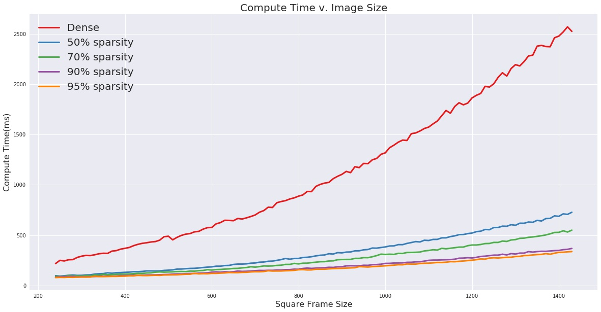
As you can see our new hybrid network consistently outperforms tensorflows regular convolution operator. Additionally,
note that the runtime for the dense convolution follows a polynomial path, while the runtime for our hybrid network is
nearly linear. As a result, this new hybrid network could be especially useful for style-transfer in Ultra-HD images.
Now that we have shown the runtime results, we will now demonstrate the quality of style-transfer that is obtained from
a sparse network. The following are a few samples of style transfer using our sparse structure and this style image.
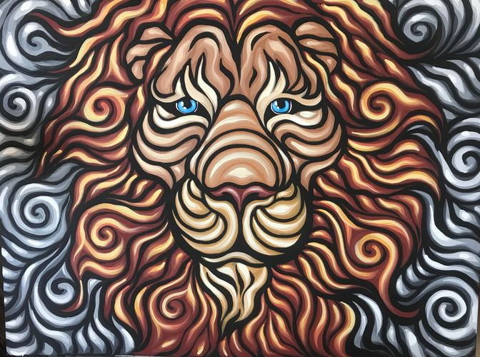
Dense
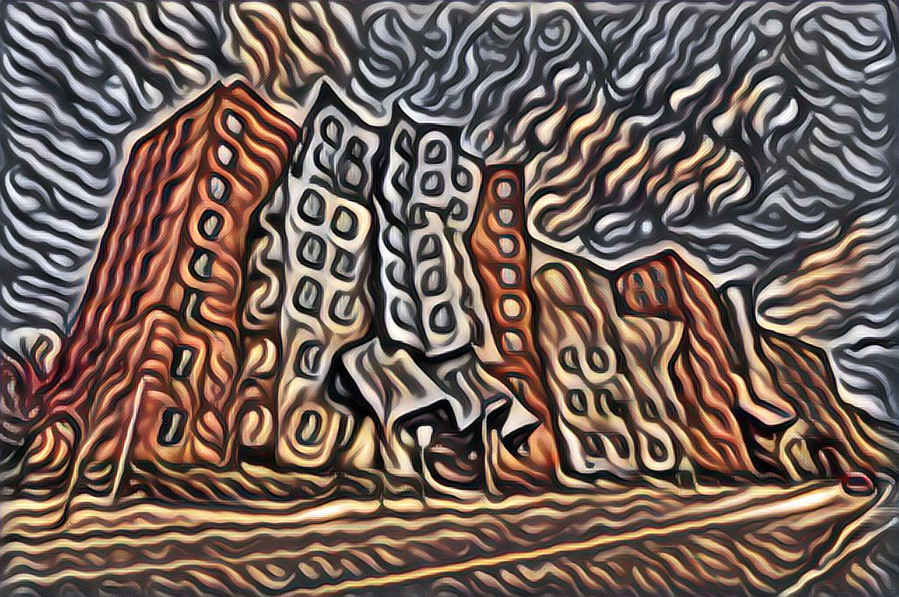
50%
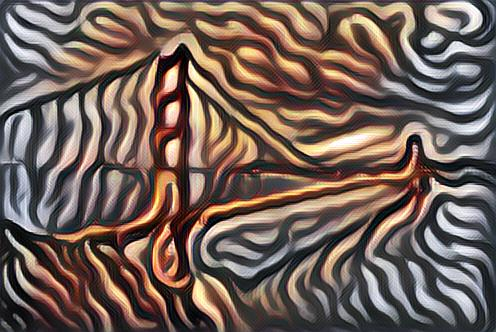
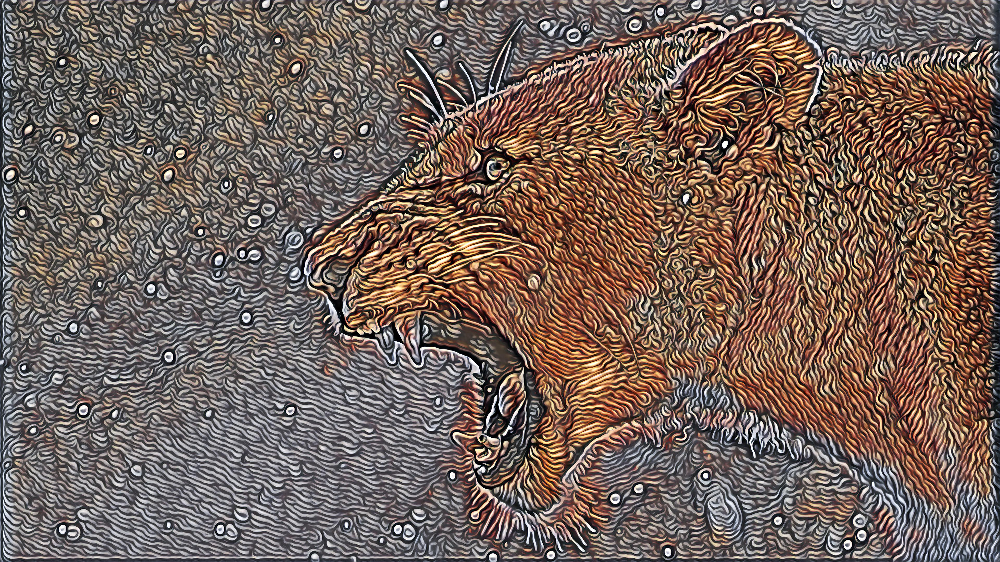
70%
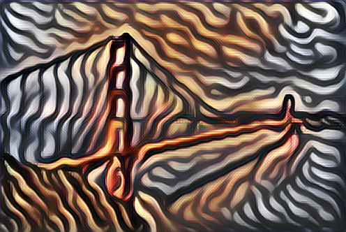
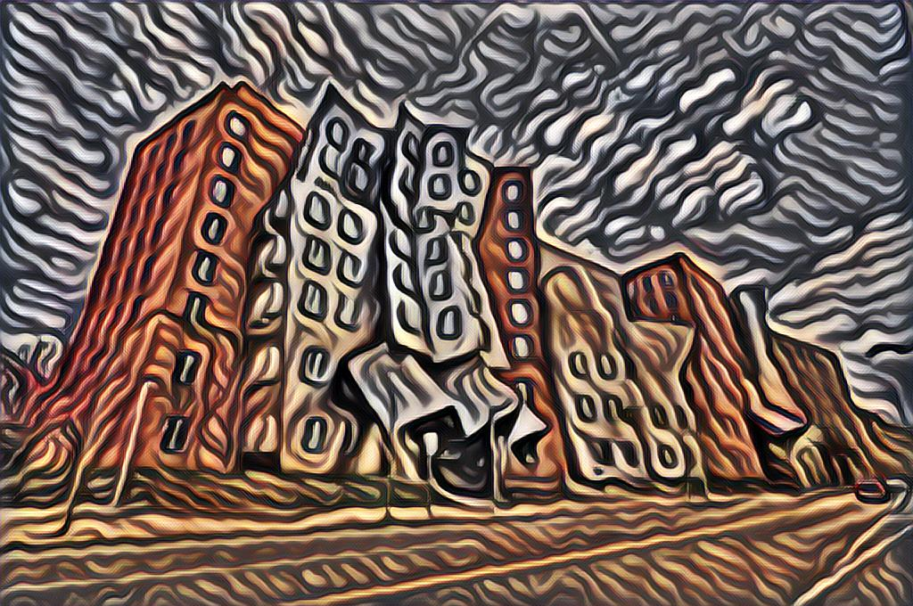
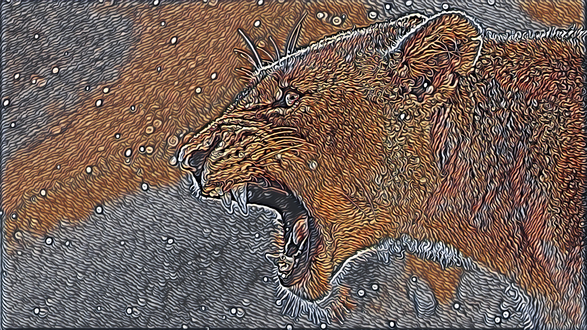
90%
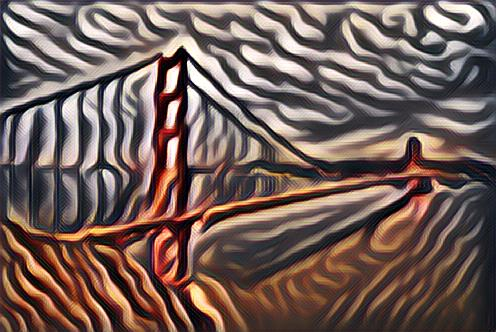
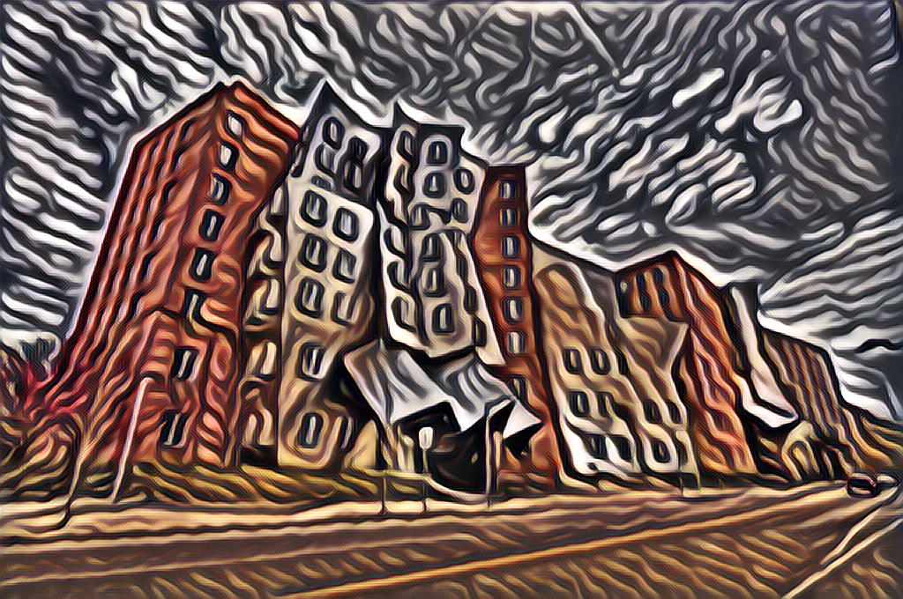
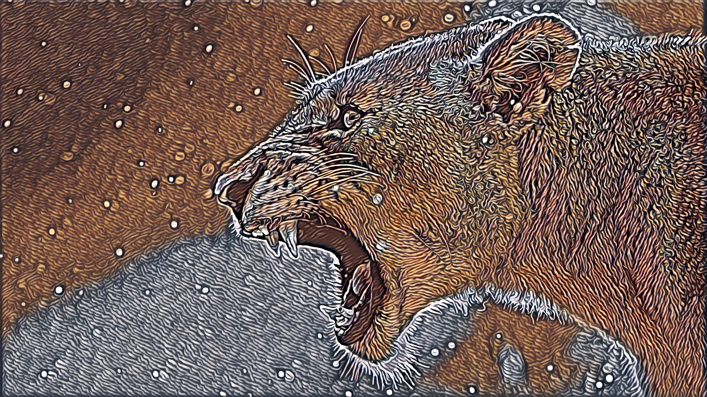
95%
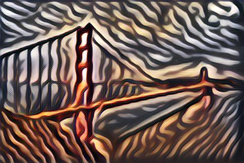
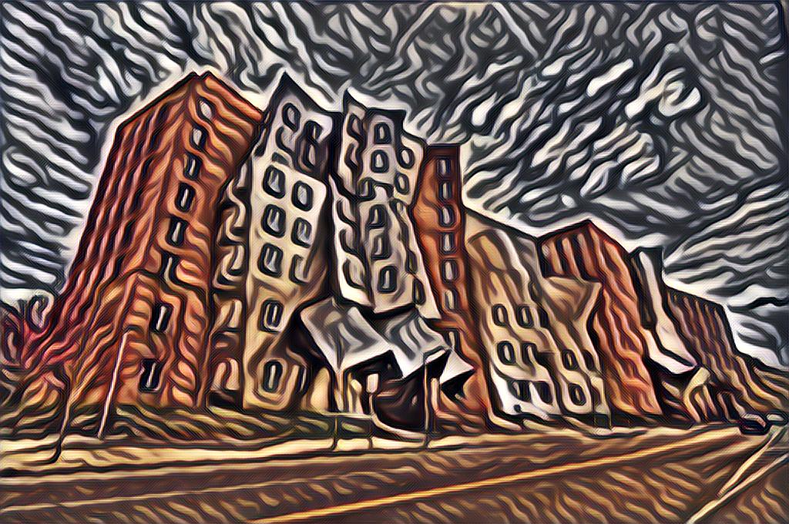
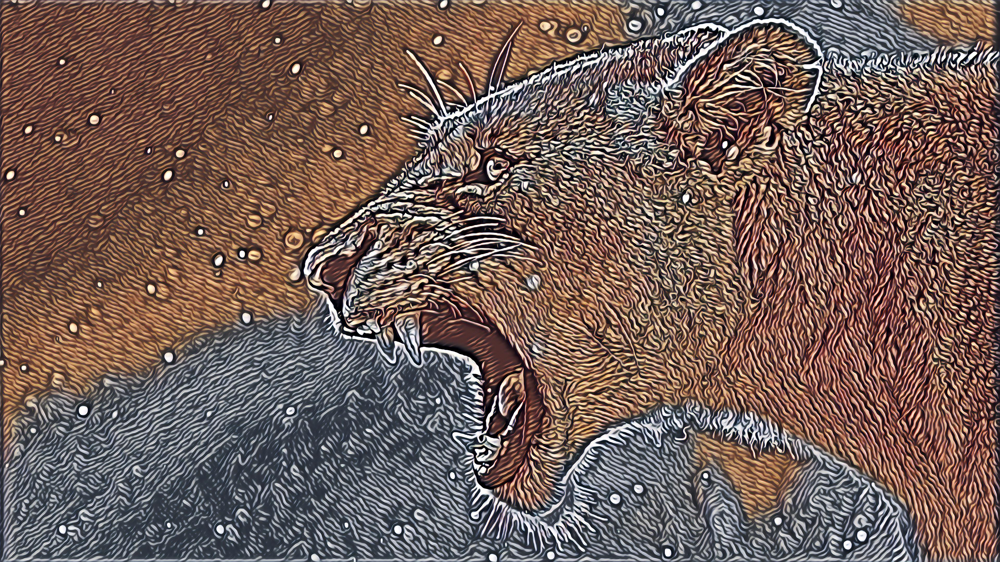
Before discussing the results, it is important to note that the above images original dimensions are:
Golden Gate Bridge-496 x 331, Stata Building-1024 x 679, and Lion-3840 × 2160, but the training and style image are
256 x 256. In general, the images are stylized quite well even at 95% sparsity. There are really only two main differences.
The first is that the stylization seems to lose the vibrance/variance in color. For example, the lion stylized by the
dense network has very vibrant color range for the lion and a background with lots of different colors, while the lion
stylized by the 95% sparse network has a lion with less color range and a background that is split by two types of colors.
The next difference is the correlation of sparsity and a lack of "swirliness." By "swirliness", we are referring to
how the original style image could be characterized by swirl-like patterns across the image. A good example of the network,
losing this attribute as sparsity increases can be seen in the golden gate bridge sequence, which starts with high
"swirliness" and eventually ends with only slightly curved lines. On a final note, it is interesting to point out that
since all networks were trained on low resolution images, it learns the features in the context of a low image. As a
result, when applied to high resolution images, such as the lion, the style is transferred for each small patch of the
image.
Conclusions and Future Work
Part 1: Smoother Videos
As it turns out, none of our experiments were particularly successful. While the frame subtraction had the best chance of success, and had the best results,
they did not markedly improve the style transfer for the video. Howver, we did stumble upon a possible plan that could work very well
if we had had more time. During training of the neural net, there are three losses that are minimized: Content loss, style loss, and total variance loss. These
combined are what make the balance between content and style in the produced images. However, with videos, another loss component can be added to try and minimize
the effect of stylization between frames: noise loss. For example, different frames in a video contain only small difference, which can essentially be treated
as noise. If, during training, we could calculate both the styled image with and without noise, and minimize the loss between those two images, the neural net would be
much better suited to create stylized videos where there is less flickering between frames, as the background/non-moving portions of the frames would be more consistent.
Unfortunately, due to time constraints and high training times, we could not test this implementation. However, we did work on reducing inference times for style models,
which would have helped us achieve this goal.
Part 2: Model Compression
The model compression was able to acheive the two goals we wanted, which were reducing space complexity of the model and
time complexity of inference. Unfortunately, the time complexity aspect only holds true for a device with a GPU and
CUDA support, which is usually not the case on devices that benefit most from model compression such as phones and
wearables. As a result, our future work would be to implement a sparse convolution op that is supported by CPU or
phone GPU. Additionally, we would like to combine the results from our two parts into one system that could efficiently
compute stable style transfer.